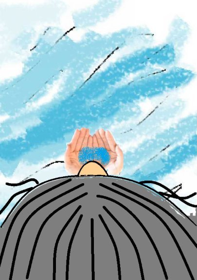
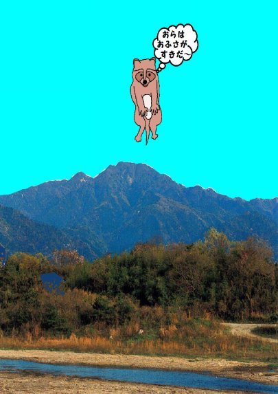
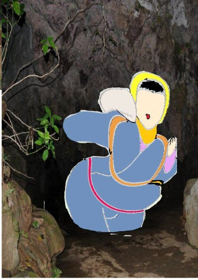
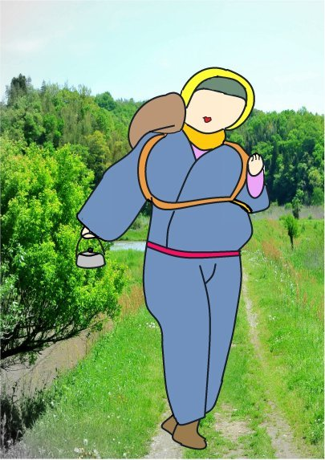
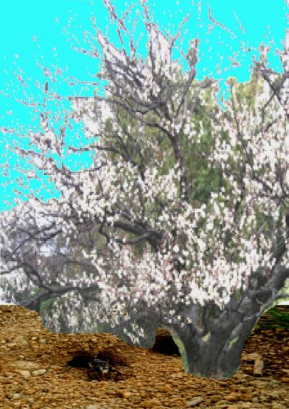
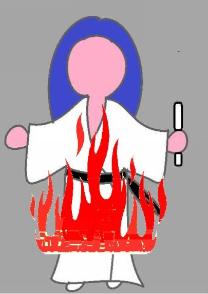
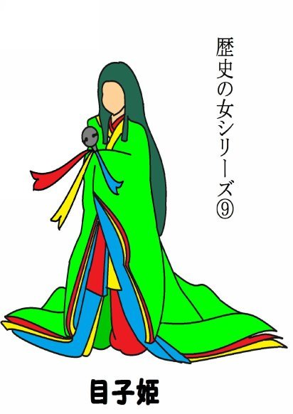
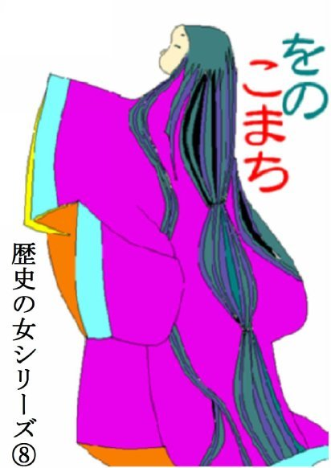

| ⑪えへんが何じゃ | |
| 深川龍 | |
| (2016) | |
第十一話
ある日のこと、山の畑で和吉夫婦は仲良う農作業をしておった。
「おら、咽が渇いたで水飲んでくる。」
和吉が畑の側を流れる小川に入って水を飲んでいる間に和吉の女房のお房が居なくなってしまった。
「お房、どこに行っちまった～。」
和吉のこだまにまざって、変な声が返ってきた。
「お房はあずかったぞっ～。」
和吉は声のする方に走った。

「お前は誰じゃ。お房を返せっ。」
「おら、お房が好きじゃ。もらって行くぞっ～。」
こーん 、こーん とキツネの声がした。キツネのコン太の声に違いなかった。
「人間の女房を連れて行ってどうするつもりじゃ。」
「おらのかみさんにする。お房はきれいで、気がやさしいで好きじゃ。」
和吉は大事な女房を取られまいと、コン太を追いかける。コン太はお房を連れて逃げてゆく。
「お房、待ってくれ。」
お房はすっかりコン太に化かされておるので、和吉の声が聞こえないらしい。コン太を和吉と勘違いしておる

のかもしれん。
「和吉、あきらめろ。お房はおらの女房にするんじゃ。」
「コン太、お房を返せ。こらっ、泥棒っ。」
一面に真菰が生えている中に、お房を連れたコン太と、それを追う和吉の姿があった。
「お房は俺らのもんじゃ。これ以上、追っかけてくればお前を殺してやるぞ。」
コン太の声が広い天から降るように聞こえる。和吉はコン太の嚇しなどに屈するわけにはいかない。和吉もありったけの声を出して叫ぶ。
「くっそ、今度こそおまえを捕まえて、毛皮にしてやるぞ。」
大声に驚いているのは大空の鳶や、地面の穴から飛び出して来た山土竜ぐらいで、人は誰一人としておらなんだ。真菰の原を通り過ぎて、幾つもの山を越え、幾つもの谷を渡り和吉は逃げるコン太を追う。コン太はお房を連れているのでさすがに疲れた。
南向きの斜面に生えている大きな山梅の木の下に来た時だった。和吉がようやくコン太に追いついた。
「さあ、追いつめたぞ。コン太、俺らのお房を返せ。」
「けっけっ、追いつかれたか。」
山梅は刺々の枝を四方八方に伸ばして真っ白い花を一面に咲かせておった。コン太は山梅の木の下にお房を連れ込んだ。見れば山梅の根元に大きな穴が二つ三ついている。
和吉はしゃがんで、山梅の木の下をのぞき込んだ。コン太は自分だけ穴にもぐりこんだが、お房をうまく穴に引っ張り込めずもたもた しておった。和吉は腹ばいになり、腕を伸ばしてお房の足をつかむと、山梅の木の下からひっぱりだした。
「なんだ、キツネなんかに化かされて。しっかりしろや。」
お房は空ろな目で和吉を見た。
「お前さんは誰じゃ。」
和吉はかなしくなった。

「俺は和吉じゃ。しっかりしてくれ。」
お房はなおもぼやっ として突っ立っておった。和吉はお房を小川のそばまで連れて行くと、その水をすくってお房の顔にかけた。
「あんた、何をしなさる。水などかけて。」
「おお、正気にもどってくれたかや。」
山の上からコン吉の声が聞こえた。
「お房はあきらめんぞ。お房、待っていてくれや。」
どうやら、コン吉は続いておった別の穴から出て、どこかに逃げ出していってしまったらしい。
和吉はほっ としてお房と一緒に家に戻ったが、このま

まにしておく訳にはいかんと思った。
「俺らは山に行って来る。」
「あんた、鉄砲なんぞ持って、どうなさる。」
「コン太の奴を仕とめてやる。」
「でも、そんな。かわいそうじゃ。」
「ほおっておいたら、また、おまえを奪いに来るに違いない。」
和吉はさっそく、一人で山に出かけた。真菰の原を通り過ぎて、幾つもの山を越え、幾つもの谷を渡り、コン吉の住む大きな山梅の前にやってきた。山梅はほろほろ と白い花びらを散らし始めておった。
枯木や枯れ草を集めると、幾つもある出入り口の穴を

探してはそれを詰めていった。最後に、一つだけ詰めない穴を残すと、詰めた穴の入口に次々と火をつけていった。詰めてない穴からコン吉がいぶされて、飛び出して来るに違いない。和吉はその穴に向かって腹這いになって鉄砲を構えた。
コン太はいつまでたっても出て来ない。山梅の木の真ん中にも洞があって、コン太はそこから逃げ出して行ったのじゃが、和吉は腹這いになって穴の中ばかり見つめておったのでそれを知らなんだ。長い時間がたって、大きな欠伸を一つした。呑気なもんじゃ。和吉はそのまま眠り込んでしまった。どれぐらいたっただろう。和吉は寒くなって、ぶるん と身ぶるいすると目を覚ました。何だか喉がいがらっぽい。大きな咳ばらいをした。
「えっへん。」
空から大きなこだまが聞こえた。
「えっへん。」
こだまではなくて、コン太の声じゃった。
和吉は座り直すと、
「えっへんが何じゃ。」
と大きな声で空に向かって叫んだ。
「えっへん。」
「えっへんが何じゃ。」
同じことを繰り返す。こうなったら、もう意地だ。やめられない。和吉はこうして、夜になっても家に戻らない。心配になった女房のお房は村長の家へ相談に行った。
「そりゃ、コン太の所じゃな。」
数人の男衆が龕灯ともして、山梅の所に向かって出かけて行った。
暗い山梅の下で一人の男が独言を言っておった。
「えっへんが何じゃ。えっへんが何じゃ。」
遠くから男衆が声をかけた。
「和吉どん。どこじゃ。」
「えっへんが何じゃ。」
「おう、こっちじゃ。こっちじゃ。」
男衆はようやく座り込んでおった和吉の側へ行って、手を引っ張って立たせた。
「和吉どん。しっかりなされ。」
男衆が和吉を家に連れ戻すと、お房は和吉の着物に着いた枯れ草や木の葉をはたき落とした。
「まあ、あんた。よう帰って下さった。」
和吉は空ろな目をしている。
「えっへんが何じゃ。」
和吉はそれから同じことを繰り返すだけでご飯も碌に食べない。心配になった女房のお房はまた村長の家へ相談に行った。村長も困った顔になった。
「キツネツキ（狐憑）じゃ。お祓いをせにゃなるまい。」
巫女さんのお祓いを受けると、和吉はすっかりもとに戻った。しかし、自分を化かしたコン太の奴が憎くうてならん。三、四ヶ月ほどすると、再び鉄砲を持って、山梅の下のコン太の穴に向かった。
コン太の穴に着くと枯木や枯れ草を集め、幾つもある出入り口の穴を探しては、それを詰めていった。勿論、今度は山梅の真ん中にある洞にも大きな石を詰めた。最後に一つだけ穴を残すと、他の穴の入口に火をつけていった。
いぶされて中から小さなキツネの子供たちが出て来

た。後からコン太と雌のキツネがこんこん と咳ながら出て来た。
それを見た和吉は鉄炮を撃たずそのままそっと自分の家に帰っていった。間もなくお房も初めてのやや児を産む。キツネの穴の山梅は青い実をたわわに成らせておった。｛完｝
深川龍
歴史の女シリーズ⑧ 、⑨
も読んでください。

